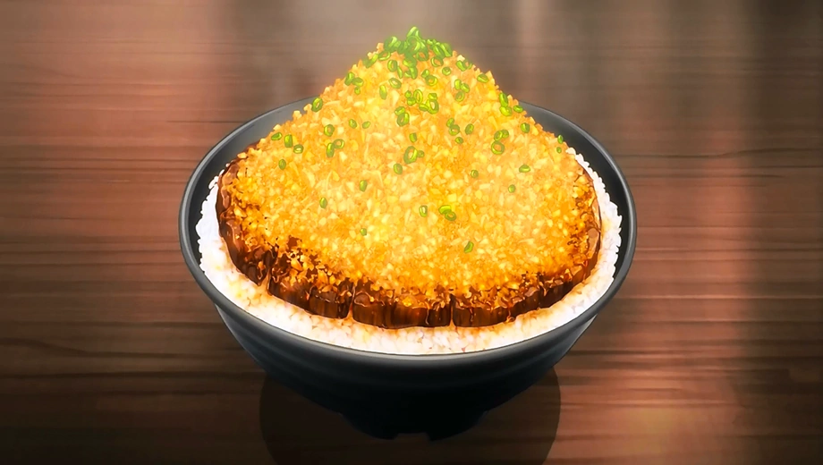

Chaliapin Steak Don

How to make Chaliapin Steak Don
Chaliapin steak is a very tender version of steak marinated with onion juice and served with more onions. What
sets this version apart from other Japanese steak recipes is the onions used to soften the muscle fibres and
proteins in the meat.
Ingredients
- 1 Beef Sirloin (Super market discount)
- 1 Onion
- Pepper
- Salt
- Potato Starch
- Rice (Donburi Bowl)
- Umeboshi Paste (Pickled plum)
- Sauce
- 1/4 Cup of Red Wine
- 2 tbs Soy Sauce
- Butter
Steps
- Preparation mince 1 onion
- Pound w/ plastic paper to tenderize steak
- Remove minced onions
- Apply salt and pepper
- Slice into steak
- Add 1/4 cup of read cooking wine
- Add 2 tbs of soy sauce
- Add potatoe starch
- Caramelised minced onions apply 2 tbs of butter and cook onions
- cut steak into slices
- Oagariyo!